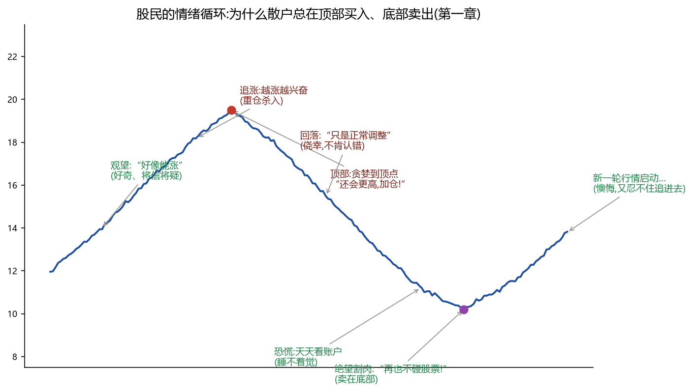

本章回答一个问题：为什么绝大多数股民都亏钱？作者陈江挺给出的答案不是「知识不够」，而是——人性。这一章是全书的地基：先认清自己，再谈技术。
书开篇引用了一句华尔街名言，也是全书的基调：
“股票市场是有经验的人获得很多金钱、有金钱的人获得很多经验的地方。”
这句话残酷但诚实，它包含三层意思：
1经验值钱 —— 老手靠多年积累的判断力赚钱
2学费昂贵 —— 新手几乎必然要「用钱换经验」
3循环残酷 —— 等你攒够了经验，可能已经交完了学费（本金亏光）
作者进一步指出：炒股的技术来自经验的积累，而这个积累过程艰难且痛苦，因为它处处与人性相冲突——该止损时人性让你抱侥幸，该持有时人性让你怕到失眠，该空仓时人性让你手痒。
炒股最难的不是战胜市场，而是战胜自己。
作者不回避这个比喻：股市确实像赌场，都有不确定性、都靠概率。但它有三个关键的不同，而这些不同恰恰是聪明人能够赢的原因：
① 能不能不下注
普通赌局（如轮盘）：坐上桌就得玩，不能弃局
股市：可以空仓等待——一直等不到好机会，就一直不玩
② 能不能中途离场
普通赌局：一局定了才能走
股市：随时可以止损离场，把损失锁在很小
③ 赔率
普通赌局：固定且对你不利（赌场抽水）
股市：可以自己研究判断，胜算大时赔率往往也大
赌场老板为什么稳赚？不是每局都赢，而是每局都有一点微弱的概率优势，重复千次万次，优势必然兑现。这就是期望值的力量。
股市赢家同理：你不需要每次都对，你只需要建立自己的期望值优势——胜算小的时候，不下注（空仓也是一种操作）；胜算大、赔率好的时候，才出手，且下重一点的注。
会炒股的人，大部分时间在等，小部分时间在打。频繁进出的人，本质是把每一局都当成胜算相同的局来玩，恰恰暴露了他没有概率思维。
本章核心。每一条都要对照自己——这一节与其说在讲市场，不如说在照镜子。

▲ 股民情绪循环：一轮轮循环，一轮轮亏损
上图是散户的标准心理轨迹：观望 → 追涨 → 贪婪 → 侥幸 → 恐慌 → 绝望割肉 → 懊悔再追……下面六条弱点，就是驱动这个循环的引擎。
弱点一：讨厌风险 最致命的一条
表现：账面亏损时，人本能地拒绝把亏损「变成现实」——不卖就不算亏，于是小亏拖成大亏；账面盈利时，又怕利润飞走，急急忙忙落袋。
结果：赚小钱、亏大钱——正好和成功所需的方法（亏小钱、赚大钱）完全相反。
书中的场景：股票从 20 元跌到 18 元，你对自己说「反弹就卖」；跌到 16 元，你说「都跌这么多了，还能跌到哪」；跌到 12 元，你干脆不看了；最后在 9 元，你终于崩溃割肉——卖在最低点，因为那时恐惧压倒了一切。
对策：止损是成本，不是损失。做生意要进货成本，炒股的「进货成本」就是偶尔止损掉的小钱。接受它，你才能活下来。
弱点二：急功近利
表现：想一夜暴富，于是满仓一只股、频繁短线、听消息博重组。
结果：手续费和滑点不断磨损本金；而且满仓一次大错，就足以清零半年利润。
对策：把预期降到「每年稳定赚钱」的量级。市场里活得久，比跑得快重要一百倍。
弱点三：好自以为是
表现：买了股票就只看得见利好；股价跌了，不检查「我是不是错了」，而是拼命找理由说服自己「主力在洗盘」「基本面没变」。
结果：把理智降级为「为自己辩护的律师」，小亏拖成大亏。
书中提醒：市场永远是对的，错的只能是你。股价跌了，说明市场在告诉你：你的判断有问题。听市场的，别听自己的。
弱点四：好跟风
表现：听朋友、听股评、听「内部消息」就敢下重注；别人买什么自己买什么。
结果：你听到消息时，消息早已反映在股价里；你进场，正是人家出货的时候。
书中调查：华尔街调查显示，一般人买入股票的最主要原因是「这只股票在涨」，卖出的最主要原因是「这只股票在跌」——完全是情绪和羊群驱动，与价值判断无关。
对策：每一笔买卖，必须能自己说出理由。说不出理由的交易，就是赌博。
弱点五：因循守旧
表现：死抱亏损股「等回本」，哪怕基本面早已恶化；或者坚持一套早已失效的老方法。
结果：「等回本」的潜台词是「我知道错了，但我就是不改」——资金被钉死在烂股上，错过了无数机会。
对策：股票不知道你的买入价。它跌，就是该考虑卖；它涨，才是该考虑持有。你的成本价对市场毫无意义。
弱点六：报复心理
表现：刚被止损，又羞又怒，立刻杀回市场「把钱赚回来」，仓位比上次更大。
结果：情绪化交易接二连三，越亏越赌、越赌越亏——赌徒的毁灭路径。
对策：连续亏损时，减仓、甚至离场休息。市场天天开门，机会永远有，先修好心态再说。
作者把千万人性弱点归结为两种根本情绪：
贪：追高、满仓、盈利不肯走、亏了不肯砍 → 买在顶、套在顶
怕：不敢买强势股、盈利早早落袋、亏损死扛不敢面对 → 卖在底、拿不住好股
注意：贪和怕经常同时出现在同一个人身上——对利润「贪」，对止损「怕」。这就是为什么多数人「赚小亏大」。
炒股的过程，就是训练自己在该贪的地方贪（让利润奔跑）、在该怕的地方怕（坚决止损）。
认清人性弱点后，作者给出四条基本要诀，作为后面所有技术方法的出发点：
1保本第一
巴菲特名言：“第一条是保住本金，第二条是保住本金，第三条是记住前两条。”本金是你在牌桌上的筹码，筹码没了，再好的机会也与你无关。
数学事实：亏 50%，要赚 100% 才回本；亏 70%，要赚 233%。亏损是不对称的，所以保本永远优先于赚钱。
落实到操作：每笔交易进场前，先问「我最多会亏多少」，而不是「我能赚多少」。
2快速止损
止损要快、狠、不找理由。犹豫一秒，侥幸就会占领大脑。止损点必须在买入前定好（第三章讲怎么定），而不是套住了再想。
3别一次下注太多
永远保留后备资金。满仓意味着失去纠错能力——错了只能干瞪眼。分批进场，错了损失小，对了还有钱加码（具体方法见第三章资金管理）。
4不断盈利 ＝ 知识 ＋ 经验 ＋ 心态
知识：可以通过读书快速获得（本书第二、三章就是）；经验：只能用时间和真金白银慢慢换，没有捷径；心态：在一次次实战中修炼，是最后拉开差距的东西。
三者的关系：知识告诉你该怎么做，经验告诉你做得成什么样，心态决定你做不做得到。
新手的正确起步：一开始就用小钱玩，把学费控制在可以承受的范围内。用亏得起的钱，去买昂贵的经验，是股市里最划算的一笔交易。等你能稳定地不亏大钱了，再逐步加大资金。
1. 股市和普通赌局的三个不同是什么？这些不同给了理性玩家什么优势？
2. 「赚小钱、亏大钱」对应哪条人性弱点？它的心理机制是什么？
3. 为什么说「不卖就不算亏」是自欺欺人？你的成本价对市场意味着什么？
4. 华尔街调查显示散户「为什么买、为什么卖」？这说明了什么？
5. 亏 50% 要赚多少才回本？这说明保本为什么优先？
6. 连续亏损时，正确做法是什么？错误做法（报复性交易）的心理根源是什么？
“股票市场是有经验的人获得很多金钱、有金钱的人获得更多经验的地方。”
“炒股最难的不是战胜市场，而是战胜自己。”
“股价跌了，市场就是在告诉你：你错了。”
“股票不知道你的买入价。”
“止损是生意的成本，不是损失。”
下一篇预告：认识了人性弱点，接下来需要知识武装——第二章《股票分析的基本知识》：基本面怎么选股、技术面怎么择时、华尔街家训怎么保命。
风险提示：本文为《炒股的智慧》（陈江挺 著）个人读书笔记，仅作知识分享，不构成任何投资建议。市场有风险，投资需谨慎。配图为学习示意图，非原书插图。
如果这篇文章对你有帮助，欢迎点赞、在看、转发给同样在股市里修炼的朋友。上面六条人性弱点，你最中过哪一条？评论区告诉我。